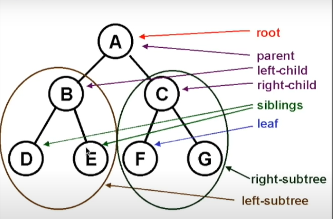

Es una forma de visualizar data representada visualmente como un arbol justamente.
Cada item del arbol se le llama nodo o 'node' . Y la punta del arbol, es el nodo 'root' .
Asimismo, se habla de nodos hijos o 'child nodes' (2 y 3 serian child nodes de root, es decir, de 1 y, a su vez, cada nodo se califica segun su lado, siendo 2 el left-child y 3 el right-child). Asimismo, se habla de nodos hermanos o 'sibling nodes' (2 y 3 son siblings).
Ademas, los nodos de mas abajo, al final del arbol se les dicen hojas o 'leaf'.
Pero tambien se habla de left-subtree y right-subtree:
Un Binary Serach Tree: